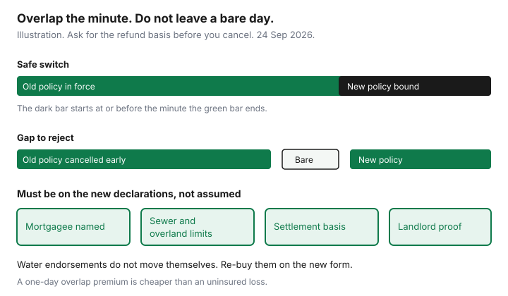

Insurance · Canada
How to Switch Home or Tenant Insurance in Canada Without a Coverage Gap
People cancel a home policy on a Friday because a quote looked cheaper, and the new policy starts Monday. The weekend is uninsured. A lender who holds a mortgage, or a landlord who required a tenant policy, finds out later, usually at the worst time. The shopping guide for a lower premium is already published. This page is the move itself: the order of bind and cancel, the refund basis, the proofs the next underwriter wants, and the endorsements that do not come along for the ride.
A renewal switch and a mid-term switch use the same order. Mid-term is where the refund penalty shows up. Price that penalty before you celebrate the new premium.
Disclosure: Home insurance quote flows, tenant insurance quote flows, and broker quote portals are offer types. Saving Optimizer may earn a commission if we later add partner links. We do not currently claim insurer or broker partnerships. We do not sell policies. Get a written binder from a licensed insurer or broker. Education only.
Key takeaways
- Bind the new home or tenant policy before you cancel the old one. The new effective time should be the same minute as the old cancellation, or earlier.
- Ask whether your cancellation is pro-rata or short-rate, and what the refund cheque will be, before you jump. A mid-term exit can cost more than waiting for renewal.
- Send the new insurer a claims-history letter. Do not omit a loss to look loyal.
- Update the mortgagee on a home policy, or the landlord certificate on a tenant policy, before the old policy ends. Move the pre-authorized debit.
- Sewer backup and overland flood do not transfer themselves. Buy them again on the new declarations, then read those pages in the first 30 days.
Bind the new policy before cancelling the old—same effective minute if needed
The new policy is bound when you have a binder or declarations that name the address, the limits you shopped, the settlement basis, and the effective date and time. A portal “you’re approved” screen is not that document until the PDF matches the sheet. Set the new effective time at or before the minute you will end the old policy. A one-day overlap means you pay a day twice. That day is cheaper than a kitchen fire on a bare date.

Only then do you cancel the old policy, in writing, effective at that same minute or at the end of the overlap you accepted. Ask for a cancellation confirmation. Keep both PDFs. If the new insurer needs a day to issue paper, do not fill the wait by cancelling early. Wait.
Tenant policies are smaller premiums and the same rule. A landlord’s proof-of-insurance clause does not care that you “meant” to bind on Monday. If you are moving units, bind the new address before you hand back keys only if the old lease still requires cover through the last night. Overlap the two addresses for the nights your contents are actually in transit or split between them.
Pro-rata refunds and short-rate penalties: ask before you jump
Home policies are not the Ontario auto policy. There is no single national refund table. Two labels show up often, and you should ask which one your contract uses before you cancel.
- Pro-rata. The insurer keeps the premium for the days you were covered and returns the rest. This is the kinder math. It is common when the insurer cancels for a reason the contract allows. It is not automatically what you get because you found a cheaper price.
- Short-rate. The insurer keeps an extra slice for handling a policy that was priced as a full term. Many Canadian property wordings use short rate when the named insured cancels mid-term. The percentage is in that insurer’s table, not on this page.
Email and ask for three numbers: the earned premium, any flat fee, and the refund you will actually receive, with the effective time of cancellation. Compare that refund with the new premium for the same dates. If you are three weeks from renewal, the short-rate wedge can erase the “savings” of leaving now. Stay until the expiry unless the old policy is missing a limit you cannot live without, such as sewer backup on a house that needs it. The auto mid-term page shows a labelled version of this arithmetic for cars. The habit is the same. The table is not.
Transfer claims-free and longevity proofs the new underwriter wants
The new underwriter will ask about prior claims and about how long you have been insured. Answer with a letter of experience or a claims history from the current insurer, not from memory. Autoplus-style databases are an auto habit. Property is often a letter. Order it before you argue with a quote that assumed a loss you did not have.
What transfers is the record, not the old loyalty percentage. The loyalty guide makes that distinction. A claims-free history can be priced by the next company under its own factor. Omitting a water claim, a theft, or a liability incident to keep that factor is a misrepresentation. Denials later are how that choice is priced. If the record is heavy, the honest win may be a deductible you can cash-flow, not a new logo. See raising a home deductible.
Years with the old company do not move as a coupon. If the new quote’s “loyalty” line is larger than the old one on day one, ask what it is actually paying for. New business discounts and tenure discounts are different lines.
Mortgagee / landlord certificate updates so PADs and proofs stay valid
A mortgaged home is not fully switched until the lender’s interest is on the new policy. The standard mortgage clause, or the lender’s requested wording, has to name the mortgagee before you cancel the old contract. Send the lender the proof they asked for: policy number, effective date, dwelling limit, and the mortgagee name as they spell it. A pre-authorized debit that still pays the old insurer, and a lender file that still lists the old policy, is how a switch looks finished in your inbox and unfinished at the bank.
Tenants: send the landlord the certificate the lease names, with the new dates, the liability limit the lease requires, and the unit address. Many leases ask for $1 million or $2 million liability. Match the lease. A cheaper tenant quote at a lower liability limit can breach the lease even when the contents number looks fine. The tenant comparison is the shopping page. This paragraph is only the handover.
Cancel the old PAD the day the cancellation confirms. Start the new one. Keep one month of premium in the account so a double pull during the overlap does not bounce. If the old insurer pulls an extra month, the cancellation confirmation is what you send to get it back.
Water and flood endorsements: re-buy explicitly; they do not auto-port
Sewer backup, sump failure, overland flood, and groundwater are endorsements or grants with their own limits. They do not follow you because you told the new broker “same as last year” on the phone. The new declarations must show the limit and the deductible, or they must show that the peril was declined. “Not offered” is an acceptable written answer. Silence is not.
Read the two water guides before you accept a quote that deleted them to win on price: sudden water versus sewer backup and overland flood. If the old policy had $50,000 of sewer backup and the new one has none, you did not switch. You dropped a coverage. Put it back or decline it in a sentence you save.
The same rule applies to a rental-income endorsement, a home-business rider, earthquake where you had it, and scheduled jewellery. List them on the spreadsheet before the first quote, not after the cancellation.
First 30 days: confirm declarations pages match what you were quoted
In the first month, compare the issued declarations to the quote you accepted. Check the address and unit, the named insureds, the mortgagee or landlord certificate, the dwelling or contents limit, replacement cost versus actual cash value, every deductible, the liability limit, and each water grant. A portal quote that said “sewer included” and a PDF that does not are a problem you can still fix if the old policy’s cancellation can be reopened or if you add the endorsement now. Do not discover it at claim time.
| Line | Quote said | Declarations show |
|---|---|---|
| Effective date and time | At or before the old cancellation | Write the actual timestamp from the PDF |
| Mortgagee or landlord | Named, spelling matched | Confirm the lender or landlord received it |
| Water and flood | Limits you locked | Endorsement number, limit, deductible |
| Settlement basis | Replacement cost or ACV, as shopped | The basis printed, including any roof exception |
If you are buying rather than switching, the new-home checklist adds the lender-advance timing. This page assumes a policy that already exists and must not lapse. Either way, put next year’s 45-day reminder on the calendar the day the new declarations look right.
Sources & date stamps
- Financial Consumer Agency of Canada, get insurance: shop coverage and price together, and understand exclusions. Used 24 Sep 2026.
- Pro-rata versus short-rate is a contract term. Ask the current insurer for the refund in dollars before cancelling. No national home short-rate table is stated here.
- IBC describes sewer backup and overland flood as typically optional. Used on the water guides, 23–24 Sep 2026.
- Mortgagee and landlord proof requirements are contractual (mortgage or lease), not a single federal form.
Frequently asked questions
Can I cancel my old home insurance the day I get a cheaper quote?
Not before the new policy is bound in writing with an effective time at or before the cancellation. A quote screen is not a binder. Overlap by a day if you must. Do not leave a bare day.
Will I get a full refund of unused home premium?
Ask. If you cancel mid-term, many property contracts use a short-rate calculation that keeps more than a simple day count. If the insurer cancels, pro-rata is more common. Get the dollar refund before you jump.
Do my claims-free years transfer?
The record can be underwritten again. The old company’s loyalty percentage does not move with you. Send a claims-history letter and do not hide a loss.
Does sewer backup move to the new policy automatically?
No. Re-buy sewer backup, overland flood, and any other endorsement, and confirm them on the declarations. A verbal “same as last year” does not print the limit.
What has to be updated besides the policy?
The mortgagee on a mortgaged home, or the landlord certificate on a tenant policy, and the pre-authorized debit. Do that before the old policy ends.